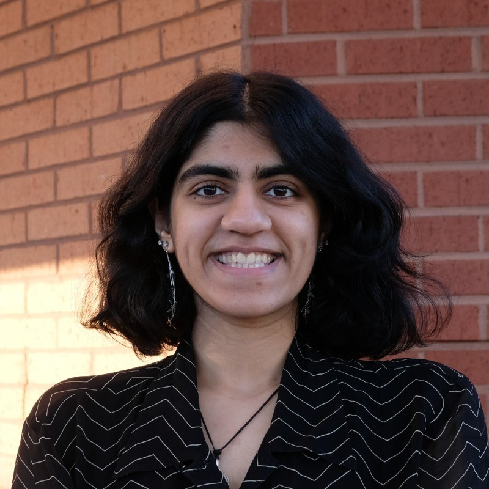
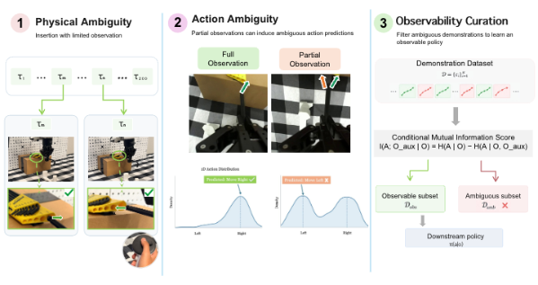
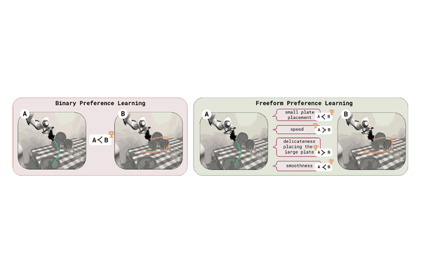
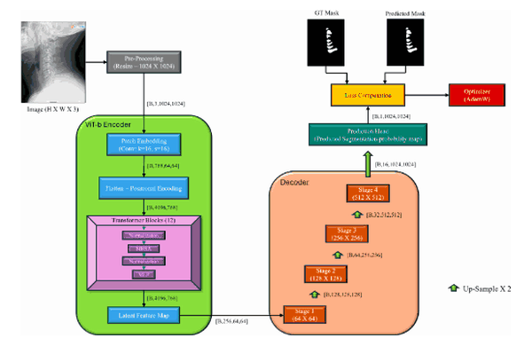
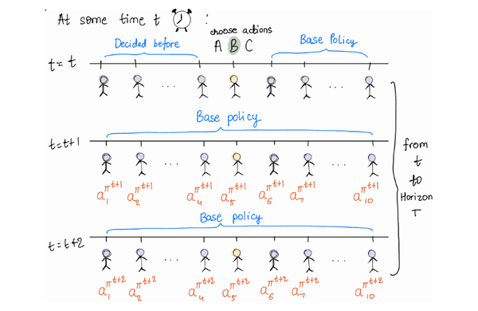
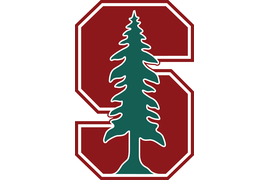
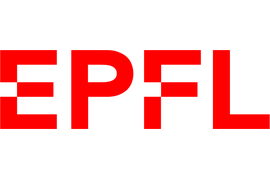
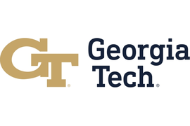
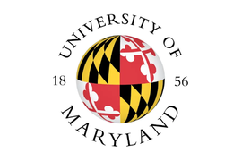

|
Anubha Mahajan
Hi! I'm a second-year Computer Science Master's student at Stanford, advised by Chelsea Finn.
My research interests lie in reinforcement learning, particularly how agents can learn from their own experience and from richer forms of human feedback to act capably and reliably in the real world.
Previously, I completed my B.S. in computer science at Georgia Tech, where I was advised by Cassie Mitchell and Patrick Kastner.
During my undergrad, I was fortunate to spend a summer as an NSF REU fellow at the University of Maryland, advised by David Mount.
After graduating, I spent a summer as a research intern at EPFL, advised by Maryam Kamgarpour.
In my free time, I play rugby, practice classical Indian dance, and play piano. I also love watching musicals, reading fiction, and eating desserts.
Email /
CV /
Scholar /
GitHub /
LinkedIn
|

|
Publications
Highlighted papers are ones I led or co-led. * denotes equal contribution.
|
|

|
What Your Policy Cannot See: Robot Data Curation via Observability Estimation
Tian Gao,
Zhengxu Yan,
Anubha Mahajan,
Rohan Tan Bhowmik,
Joey Hejna,
Dorsa Sadigh,
Chelsea Finn
In submission
|
|

|
Freeform Preference Learning for Robotic Manipulation
Marcel Torne*,
Anubha Mahajan*,
Abhijnya Bhat*,
Chelsea Finn
Conference on Robot Learning (CoRL), 2026
project page
/
arXiv
|
|

|
CervSpineNet: A Hybrid Deep Learning-Based Approach for the Segmentation of Cervical Spinous Processes
Jay Sunil Sawant,
Lama Moukheiber,
Anupama Nair,
Anubha Mahajan,
Jaehui Byun,
Ishwarya Pichaimani,
Sangwook T. Yoon,
Christopher T. Martin,
Cassie S. Mitchell
Frontiers in Bioengineering and Biotechnology, 2025
paper
|
|

|
Comparative Analysis of Multi-Agent Reinforcement Learning Policies for Crop Planning Decision Support
Anubha Mahajan*,
Shreya Hegde*,
Ethan Shay,
Daniel Wu,
Aviva Prins
AAAI 2025 Workshop on Cooperative Multi-Agent Systems Decision-Making and Learning (CMASDL)
arXiv
|
|

|
IRIS Lab, Stanford University
Advisor: Chelsea Finn
Graduate Research Assistant, 2025 – present
|
|

|
Sycamore Lab, EPFL
Advisor: Maryam Kamgarpour
Excellence in Engineering (E3) Research Intern, 2025
|
|

|
Pathology Dynamics Lab, Georgia Tech
Advisor: Cassie Mitchell
Undergraduate Research Assistant, 2023 – 2025
|
|
|
Sustainable Urban Systems Lab, Georgia Tech
Advisor: Patrick Kastner
Undergraduate Research Assistant, 2024 – 2025
|
|

|
NSF REU CAAR, University of Maryland
Advisor: David Mount
NSF REU Fellow, 2024
|
|
|
Graduate TA, Machine Learning with Graphs, Fall 2026
Graduate TA, Deep Reinforcement Learning, Spring 2026
|
|
|
Undergraduate TA, Design & Analysis of Algorithms, Fall 2023, Spring 2024, Fall 2024
Undergraduate TA, Intro to Object-Oriented Programming, Spring 2023
Peer-Led Undergraduate Study (PLUS) Leader, Intro to Linear Algebra, Fall 2022
|
|